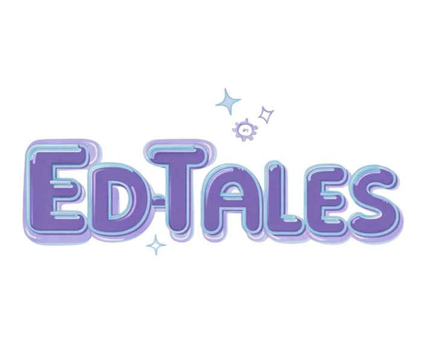
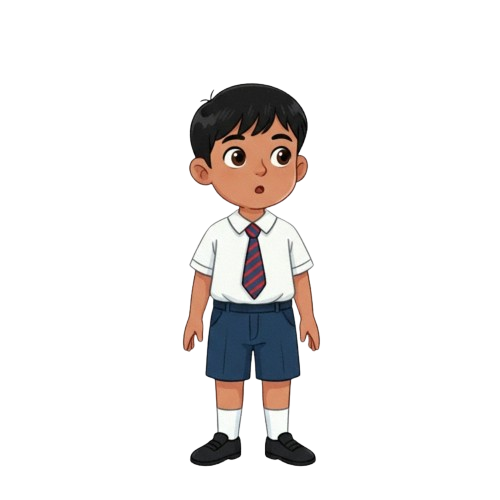
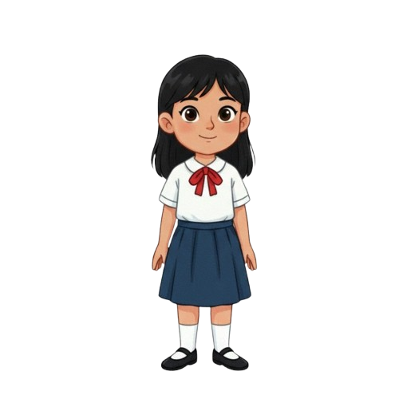
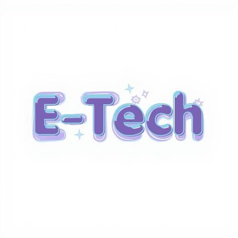

Our web-based interactive storytelling platform was developed to support Grade 4 learners in mastering essential Information and Communication Technology (ICT) concepts in an engaging manner. Aligned with the MATATAG Curriculum, this platform integrates narration, colorful visuals, interactive activities, and structured lessons covering key ICT topics such as Parts of the Computer, Digital Citizenship, Word Processing Software, Presentation Software, Desktop Publishing Software, and Spreadsheet Software. More importantly, this learning material is designed with a special feature of sign language to support Learners with Special Needs.
Ang aming interactive storytelling platform sa web ay ginawa para tulungan ang mga Grade 4 na mag-aaral na matutunan ang mahahalagang konsepto sa Information and Communication Technology (ICT) sa masaya at makulay na paraan. Ayon sa MATATAG Curriculum, gumagamit ito ng kwento, makukulay na larawan, masayang gawain, at maayos na aralin tungkol sa ICT gaya ng mga Bahagi ng Kompyuter, tamang paggamit ng internet (Digital Citizenship), paggawa ng dokumento (Word Processing Software), paggawa ng presentasyon (Presentation Software), pagdisenyo ng pahina (Desktop Publishing Software), at paggawa ng talaan at kalkulasyon (Spreadsheet Software). Higit sa lahat, may special na tampok na sign language ang materyal na ito para masuportahan ang mga mag-aaral na may espesyal na pangangailangan.
To develop an inclusive and engaging web-based interactive storytelling platform for Grade 4 learners that enhances ICT education through narration, visuals, and meaningful activities aligned with the MATATAG Curriculum.We aim to make learning more enjoyable, and effective. Through innovative features like integrated sign language interpretation, we strive to create an inclusive learning environment that supports learners with exceptionalities and ensures that every child has equal access to quality digital education.
Lumikha ng isang inklusibo at nakakaengganyong web-based interactive storytelling platform para sa mga mag-aaral sa Ika-4 na Baitang na nagpapalawak ng kaalaman sa ICT sa pamamagitan ng narasyon, visual, at makabuluhang aktibidad na alinsunod sa MATATAG Curriculum. Layunin naming gawing mas accessible, nakasisiya, at epektibo ang pagkatuto sa pamamagitan ng pagtutok sa mahahalagang paksa sa ICT. Sa pamamagitan ng makabagong tampok tulad ng integrated sign language interpretation, nagsusumikap kaming bumuo ng inklusibong kapaligiran sa pagkatuto na sumusuporta sa lahat ng mag-aaral, kabilang ang mga may espesyal na pangangailangan, upang matiyak na bawat bata ay may pantay na pagkakataon sa kalidad na edukasyon digital.
To empower Grade 4 learners to explore ICT skills through an engaging, interactive, and inclusive digital learning experience where accessibility, creativity, and technology come together to foster curiosity, confidence, and lifelong learning.
Bigyang-kakayahan ang mga mag-aaral sa Ika-4 na Baitang na tuklasin ang ICT sa pamamagitan ng isang nakaka enganyo, interaktibo, at inklusibong digital learning experience, kung saan nagtatagpo ang accessibility, creativity, at technology upang hubugin ang kanilang kuryosidad, kumpiyansa, at patuloy na pagkatuto sa buong buhay.